第05讲 难点探究专题：线段上的动点问题(4类热点题型讲练)
第05讲 难点探究专题：线段上的动点问题(4类热点题型讲练)
目录
【考点一 线段上含动点求线段长问题】 1
【考点二 线段上含动点求定值问题】 7
【考点三 线段上含动点求时间问题】 16
【考点四 线段上含动点的新定义型问题】 19
【考点一 线段上含动点求线段长问题】
例题：（23-24七年级上·重庆沙坪坝·期末）点C在线段 上满足
上满足 ，点D和点E是线段上的两动点（点D在点E的左侧）满足
，点D和点E是线段上的两动点（点D在点E的左侧）满足 ，
， ．
．
(1)当点E是 的中点时，求
的中点时，求 的长度；
的长度；
(2)当
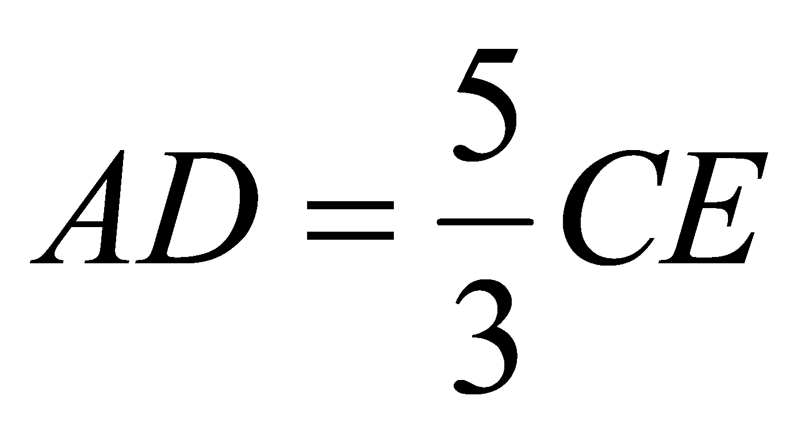
时，求 的长度．
的长度．【变式训练】
1．（2023七年级上·全国·专题练习）（1）如图，已知 ，点C为线段上的一个动点，D、E分别是
，点C为线段上的一个动点，D、E分别是 、的中点；
、的中点；
①若点C恰为的中点，则 cm；
cm；
②若 ，则 cm；
，则 cm；
（2）如图，点C为线段上的一个动点，D、E分别是 的中点；若
的中点；若 ，则
，则 ；
；

2．（23-24七年级上·浙江宁波·期末）如图，已知线段 ，点C为线段上一动点，点D在线段
，点C为线段上一动点，点D在线段 上且满足
上且满足 ．
．
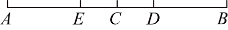
(1)当点C为中点时，求的长．
(2)若E为中点，当 时，求的长．
时，求的长．
3．（23-24七年级上·河北承德·期末）应用题：如图，已知线段 ，点
，点 为线段上的一个动点，点
为线段上的一个动点，点 、
、 分别是和的中点．
分别是和的中点．
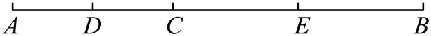
(1)若 ，求
，求 的长；
的长；
(2)若为的中点，则与的数量关系是______；
(3)试着说明，不论点在线段上如何运动，只要不与点 和
和 重合，那么的长不变．
重合，那么的长不变．
4．（2023七年级上·全国·专题练习）如图， 是线段上一点，
是线段上一点， ，，两动点分别从点，同时出发沿射线
，，两动点分别从点，同时出发沿射线 向左运动，到达点处即停止运动．
向左运动，到达点处即停止运动．
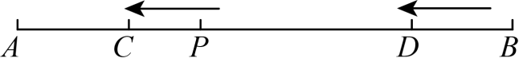
(1)若点，的速度分别是 ，
， ．
．
①若
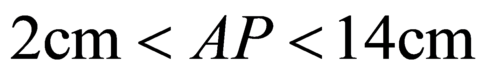
，当动点，运动了 时，求
时，求 的值；
的值；②若点到达 中点时，点也刚好到达
中点时，点也刚好到达 的中点，求
的中点，求 ；
；
(2)若动点，的速度分别是， ，点，在运动时，总有
，点，在运动时，总有
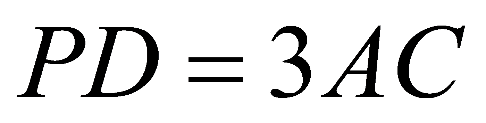
，求的长度．5．（23-24七年级上·河南周口·阶段练习）综合与实践
已知数轴上A、B两点所表示的数分别为 和9．
和9．
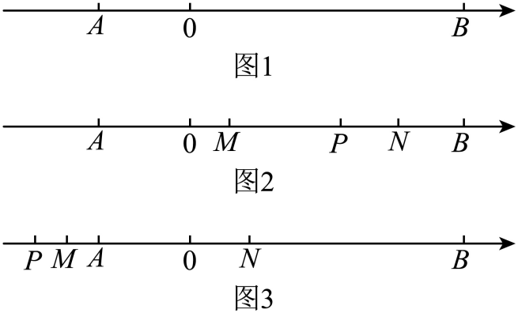
(1)观察发现：
直接写出线段 __________．
__________．
(2)情境探究：
情境①：当点P为线段的中点时，且M为 的中点，N为
的中点，N为 的中点，请你借助直尺在图1中画出相应的图形，并写出线段
的中点，请你借助直尺在图1中画出相应的图形，并写出线段 __________；
__________；
情境②：当点P为线段AB上的一个动点时，如图2，且M为的中点，N为的中点，试通过计算判断 的长度是否发生变化？
的长度是否发生变化？
(3)迁移类比：
当点P为数轴上点A左侧的一个动点时，如图3，且M为的中点，N为的中点，直接写出线段的长．
【考点二 线段上含动点求定值问题】
例题：（23-24七年级上·河南许昌·期末）如图，数轴上点A，B表示的有理数分别为 ，3，点P是射线上的一个动点（不与点A，B重合），M是线段靠近点A的三等分点，N是线段靠近点B的三等分点．
，3，点P是射线上的一个动点（不与点A，B重合），M是线段靠近点A的三等分点，N是线段靠近点B的三等分点．
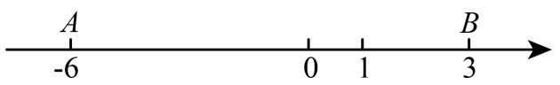
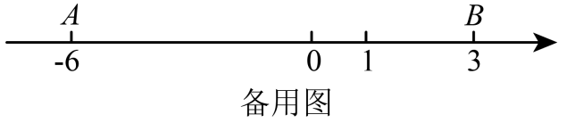
(1)若点P表示的有理数是0，那么的长为___________；若点P表示的有理数是6，那么的长为___________．
(2)点P在射线上运动（不与点A，B重合）的过程中，的长是否发生改变？若不改变，请写出求的长的过程；若改变，请说明理由．
【变式训练】
1．（23-24七年级上·湖南湘西·期末）如图，M是线段上一动点，沿 以
以 的速度往返运动1次，N是线段
的速度往返运动1次，N是线段 的中点，
的中点， ，设点M运动时间为t秒
，设点M运动时间为t秒 ．
．

(1)当 时，①
时，① ______
______ ，②此时线段
，②此时线段 的长度
的长度 ______；
______；
(2)用含有t的代数式表示运动过程中 的长；
的长；
(3)在运动过程中，若中点为C，则 的长度是否变化？若不变，求出的长；若变化，请说明理由．
的长度是否变化？若不变，求出的长；若变化，请说明理由．
2．（23-24七年级上·江苏南通·阶段练习）如图，是线段上一动点，沿
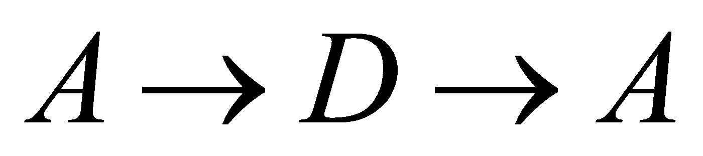
的路线以 的速度往返运动1次，是线段
的速度往返运动1次，是线段 的中点，，设点的运动时间为
的中点，，设点的运动时间为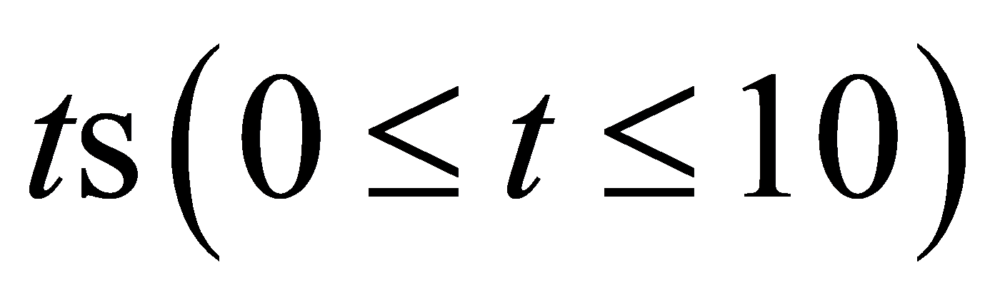
．
(1)当时，则线段________，线段 ________；
________；
(2)当 为何值时，
为何值时， ？
？
(3)点从点出发的同时，点也从点出发，以 的速度向点运动，若当运动时间满足
的速度向点运动，若当运动时间满足 时，线段
时，线段 的长度始终是一个定值，求这个定值和
的长度始终是一个定值，求这个定值和 的值．
的值．
3．（23-24七年级上·全国·单元测试）A，B 两点在数轴上的位置如图所示，其中点 A 对应的有理数为 ，且
，且 ．动点 P 从点 A 出发，以每秒2个单位长度的速度沿数轴正方向运动，设运动时间为t秒（t
．动点 P 从点 A 出发，以每秒2个单位长度的速度沿数轴正方向运动，设运动时间为t秒（t ）．
）．
(1)当 时，的长为 ，点 P 表示的有理数为 ；
时，的长为 ，点 P 表示的有理数为 ；
(2)当 时，求t的值；
时，求t的值；
(3)M为线段的中点，N 为线段 的中点．在点 P 运动的过程中，线段的长度是否发生变化？若变化，请说明理由；若不变，求出线段的长．
4．（23-24七年级上·福建福州·期末）如图，线段 ，动点P 从A 出发，以每秒2个单位长度的速度沿射线运动，M 为的中点．点P的运动时间为x秒．
，动点P 从A 出发，以每秒2个单位长度的速度沿射线运动，M 为的中点．点P的运动时间为x秒．

(1)若 时， 求的长；
时， 求的长；
(2)当P在线段上运动时， 是定值吗? 如果是，请求出该定值，如果不是，请说明理由；
是定值吗? 如果是，请求出该定值，如果不是，请说明理由；
(3)当P在射线上运动时，N为的中点， 求的长度．
5．（23-24七年级上·河南南阳·期末）如图，已知线段 ，、是线段上的两个动点（点在点的左侧，且都不与端点、重合），
，、是线段上的两个动点（点在点的左侧，且都不与端点、重合）， ，为的中点．
，为的中点．
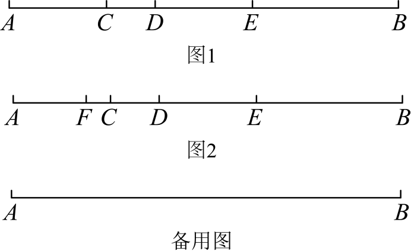
(1)如图1，当时，求的长；
(2)如图2， 为的中点．
为的中点．
①点 在线段上移动过程中，线段
在线段上移动过程中，线段 的长度是否会发生变化，若会，请说明理由；若不会，请仅以图
的长度是否会发生变化，若会，请说明理由；若不会，请仅以图 为例求出的长；
为例求出的长；
②当 时，请直接写出线段的长．
时，请直接写出线段的长．
【考点三 线段上含动点求时间问题】
例题：（22-23七年级上·江苏宿迁·阶段练习）如图1，已知线段
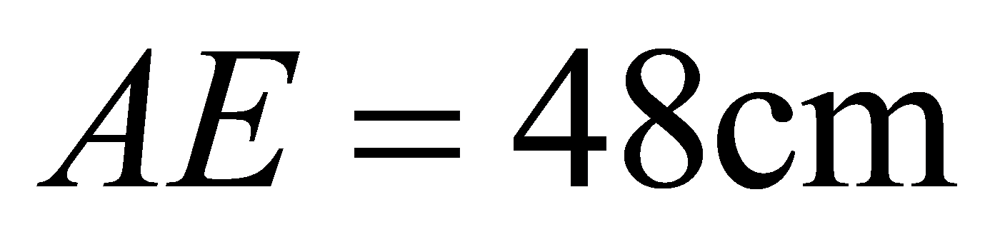
，点、、在线段上，且 ．
．(1)
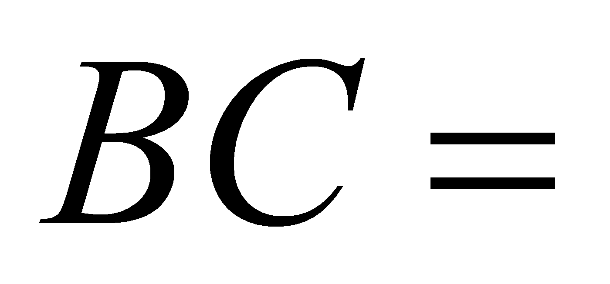
__________，__________；(2)已知动点 从点出发，以的速度沿
从点出发，以的速度沿
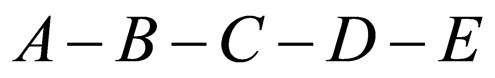
向点运动；同时动点 从点出发，以
从点出发，以 的速度沿
的速度沿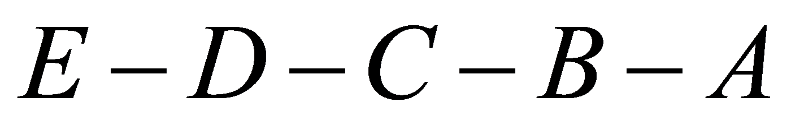
向点运动，当点到达点后立即以原速返回，直到点到达点，运动停止；设运动的时间为．①求为何值，线段的长为 ；
；
②如图2，现将线段 折成一个长方形
折成一个长方形 （点、重合），请问：是否存在某一时刻，以点、、、为顶点的四边形面积与以点、、、为顶点的四边形面积相等，若存在，求出的值；若不存在，请说明理由．
（点、重合），请问：是否存在某一时刻，以点、、、为顶点的四边形面积与以点、、、为顶点的四边形面积相等，若存在，求出的值；若不存在，请说明理由．
【变式训练】
1．（23-24七年级上·浙江宁波·期末）定义：在同一直线上有 三点，若点到
三点，若点到 两点的距离呈2倍关系，即或
两点的距离呈2倍关系，即或 ，则称点是线段的“倍距点”．
，则称点是线段的“倍距点”．

(1)线段的中点 该线段的“倍距点”；（填“是”或者“不是”）
(2)已知 ，点是线段的“倍距点”，直接写出
，点是线段的“倍距点”，直接写出 ．
．
(3)如图1，在数轴上，点表示的数为2，点表示的数为20，点为线段中点．
①现有一动点从原点O出发，以每秒2个单位的速度沿数轴向右匀速运动．设运动时间为秒 ，求当为何值时，点为的“倍距点”？
，求当为何值时，点为的“倍距点”？
②现有一长度为2的线段（如图2，点起始位置在原点），从原点O出发，以每秒1个单位的速度沿数轴向右匀速运动．当点为 的“倍距点”时，请直接写出的值．
的“倍距点”时，请直接写出的值．
【考点四 线段上含动点的新定义型问题】
例题：（23-24七年级上·福建龙岩·期末）已知线段 ，点在线段上，且
，点在线段上，且
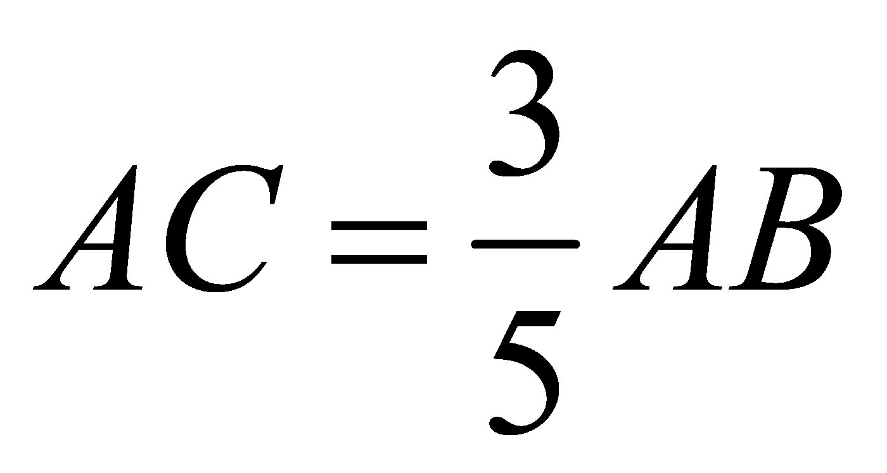
．
(1)求线段，的长；
(2)点是线段上的动点，线段的中点为，设
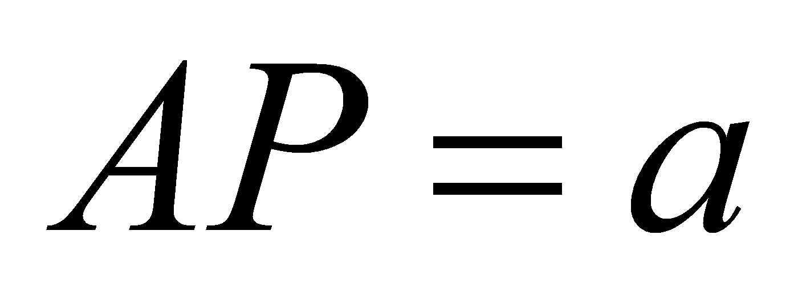
．①请用含有的式子表示线段 ，
， 的长；
的长；
②若三个点，，中恰有一点是其它两点所连线段的中点，则称，，三点为“和谐点”，求使得，，三点为“和谐点”的的值．
【变式训练】
1．（22-23七年级上·山东青岛·期末）如图1，点C在线段AB上，图中有三条线段，分别为线段 和
和 ，若其中一条线段的长度是另外一条线段长度的2倍，则称点C是线段AB的“巧点”．
，若其中一条线段的长度是另外一条线段长度的2倍，则称点C是线段AB的“巧点”．
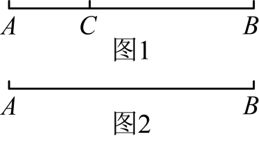
(1)线段的中点______这条线段的“巧点”，线段的三等分点_______这条线段的“巧点”（填“是”或“不是”）；
(2)若线段，点C为线段AB的“巧点”，则_______；
(3)如图2，已知．，动点P从点A出发，以的速度沿AB向点B运动，点Q从点B出发，以的速度沿 向点A运动，点P、Q同时出发，当其中一点到达终点时，运动停止，设运动的时间为t秒，当t为何值时，点P为线段
向点A运动，点P、Q同时出发，当其中一点到达终点时，运动停止，设运动的时间为t秒，当t为何值时，点P为线段 的“巧点”？并说明理由．
的“巧点”？并说明理由．
2．（23-24七年级上·安徽·期末）（1）【新知理解】
如图1，点在线段上，图中有3条线段，分别是，，，若其中任意一条线段是另一条线段的两倍，则称点是线段的“妙点”．根据上述定义，线段的三等分点______这条线段的“妙点”．（填“是”或“不是”）
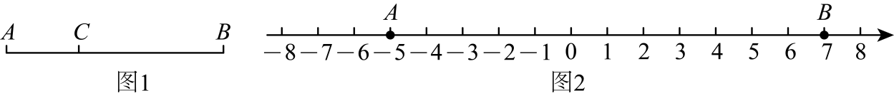
（2）【新知应用】
如图2，，为数轴上的两点，点对应的数为 ，点对应的数为7，若点在线段上，且点为线段的“妙点”，当点在数轴的负半轴上时，点对应的数为______．
，点对应的数为7，若点在线段上，且点为线段的“妙点”，当点在数轴的负半轴上时，点对应的数为______．
（3）【拓展探究】
已知，为数轴上的两点，点对应的数为，点对应的数为 ，且，满足
，且，满足
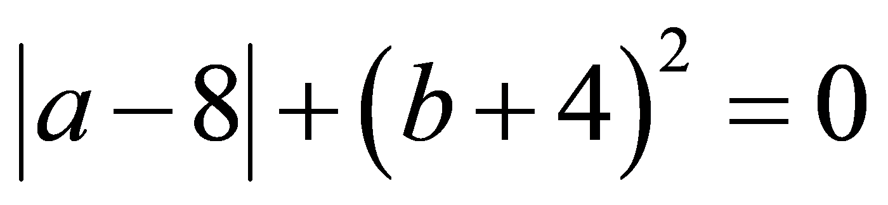
，动点， 分别从，两点同时出发，相向而行，若点的运动速度为每秒2个单位长度，点的运动速度为每秒3个单位长度，当点，相遇时，运动停止．求当点恰好为线段
分别从，两点同时出发，相向而行，若点的运动速度为每秒2个单位长度，点的运动速度为每秒3个单位长度，当点，相遇时，运动停止．求当点恰好为线段 的“妙点”时，点在数轴上对应的数．
的“妙点”时，点在数轴上对应的数．